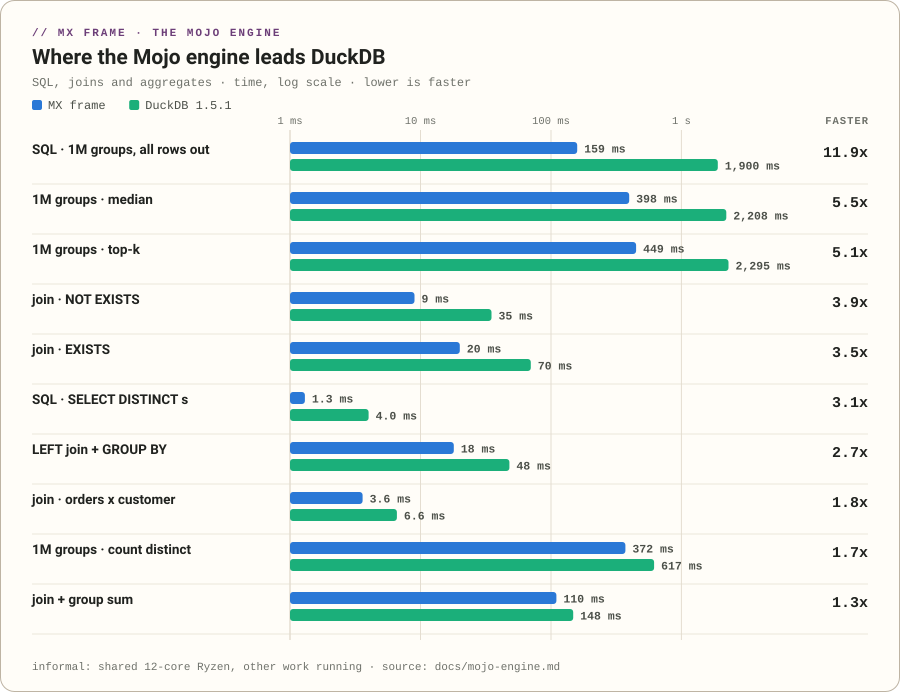
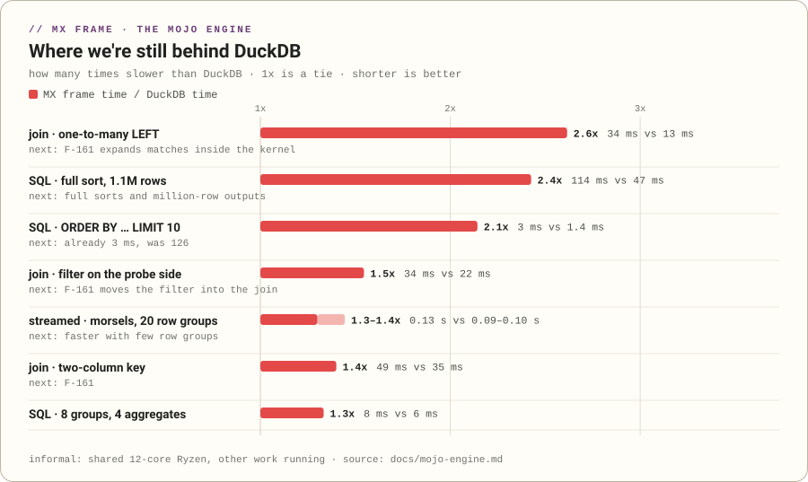

scripts/make_engine_art.py from the same numbers (docs/bench/engine-informal.json, quoted from docs/mojo-engine.md). The README and the page use A until you pick. Images below are scaled down; GitHub shows the hero about 830 px wide. Click any image for full size.A: ledger dark glow, or B: editorial paper
Same four headline numbers, same charts, same honest "still behind" chart and the informal caveat on every image. What changes is the voice: A is the house Terminal Ledger turned up (a dark focal card that glows); B reads like a printed engineering report (one huge serif number, a ruled ledger of the rest).
A · Terminal Ledger, dark glow default now
Dark ledger with a violet glow and scanlines: the MX FRAME wordmark, the vision, and four headline tiles with mini bars against DuckDB.


- Matches the docs site's dark theme and the hero card on engine.html.
- Four numbers at equal weight: reads as "a fast engine across the board".
B · Editorial paper, big serif number
Light ruled paper with a plum accent: one huge serif "9 ms" (NOT EXISTS, 3.9x DuckDB) and the other three numbers in a ruled ledger column.






- Matches the docs site's default light "paper ledger" theme.
- One number leads: a stronger single hook, less of a dashboard.
The page: docs/site/engine.html
Screenshots at 1440 × 900 (light and dark) and on a phone (390 wide). The live page is ../site/engine.html; it loads its JSON, so open it through a server (python -m http.server -d docs) or on GitHub Pages.